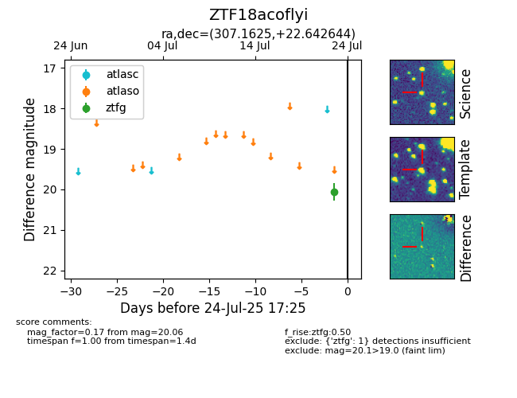

Target ZTF18acoflyi at 2025-07-24 17:25, see:
FINK: fink-portal.org/ZTF18acoflyi
Lasair: lasair-ztf.lsst.ac.uk/objects/ZTF18acoflyi
ALeRCE: alerce.online/object/ZTF18acoflyi
alt names
ZTF18acoflyi (ztf,fink)
coordinates:
equatorial (ra, dec) = (307.1625,+22.64264)
galactic (l, b) = (64.4508,-9.35248)
photometry
last ztfg=20.06
1 ztfg detections
